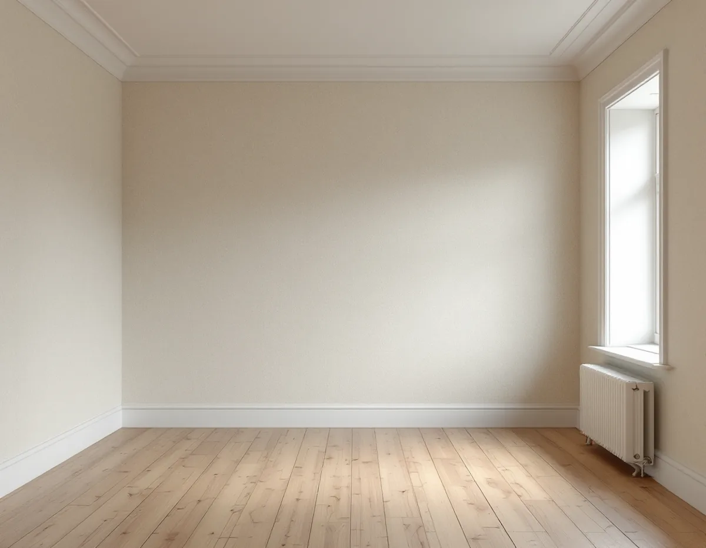
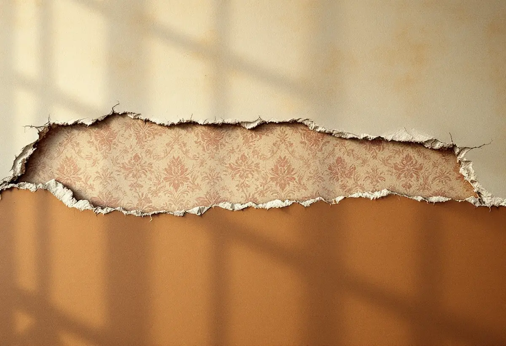

Platsbesök
Vi lyfter en kant och ser hur många lager som sitter på väggen och vad som ligger underst.
Under en tapet på Södermalm sitter ofta en annan, och under den kanske en tredje. Lagren kan vara det enda som visar hur lägenheten sett ut genom åren. Geal Entreprenad AB tapetserar i lägenheter och äldre hus på Södermalm, och innan något rivs ner tittar vi på vad som redan sitter på väggen och om det är värt att spara.

Stadens översiktsplan beskriver att det bara finns en liten del kvar av det som byggdes på malmarna under 1700-talet och början av 1800-talet, omkring 300 hus, och att de flesta ligger på Södermalm. Planen konstaterar också att de flesta av husen byggts om och till genom århundradena, så att det är svårt att tala om ett originalutförande. Några har bevarade inredningar med till exempel dekorativt målade tak.
Det mesta av stadsdelen är ändå bostadsrätter i flerbostadshus. I områdesfakta för Mariatorget 2025 finns 8 701 bostäder, varav 5 027 bostadsrätter och bara 35 i småhus. Oavsett om väggen sitter i ett trähus vid ett av bergen eller i ett stenhus från sekelskiftet börjar tapetseringen på samma sätt: vi tar reda på vad som ligger under.

Kulturen i Lund förklarar varför gamla väggar kan ha så många lager. Omkring 1870 började tapeter tryckas på billigt papper av trämassa, och de enklaste trycktes på obehandlat papper som lätt blev fläckigt. Då tapetserade man om ofta, och lager lades på lager. Om man blöter upp ett tapetsjok går det att skilja lagren åt och följa hur modet har växlat.
Baksidan kan hjälpa till med dateringen. Grön färg med arsenik gjorde att handel med arsenikhaltiga tapeter förbjöds i Sverige 1876, och tapeterna fick därefter stämpeln ”Arsenikfri” på baksidan. Riksantikvarieämbetet skriver att limfärg användes som tryckfärg på tapeter ända in på 1950-talet.
Under tapeterna i ett äldre hus kan det sitta makulatur. Svenska Byggnadsvårdsföreningen beskriver ordet som ett samlingsnamn för restpapper, från tidningspapper till spännpapp, och spännpapp blev ett vanligt underlag för tapeter under 1800-talet. Ska lagren bort tar vi först en bit av varje och sparar den. Kulturen skriver att det går att beställa handtryckta tapeter efter ett eget original, så biten kan bli förlagan till nästa tapet.
Bostadsrättslagen 7 kap. 12 § säger att den som har bostadsrätten på egen bekostnad ska hålla lägenheten i gott skick, om stadgarna inte säger något annat. Lagens 7 § har dock ett andra stycke som är viktigt på Södermalm: för en lägenhet med särskilda historiska, kulturhistoriska, miljömässiga eller konstnärliga värden krävs styrelsens tillstånd för en åtgärd som påverkar ett sådant värde. Sitter det en gammal tapet eller ett målat tak som kan vara ett sådant värde frågar vi styrelsen innan något rivs.
Även plan- och bygglagen gäller inne i huset. Boverket skriver att förvanskningsförbudet gäller vid alla ändringar, såväl exteriört som interiört, och oberoende av om åtgärden kräver lov. Förbudet är inget förändringsförbud, men det som gör byggnaden värdefull är skyddat, och byggnader från tiden före 1920-talets bebyggelseexpansion med sin huvudsakliga karaktär bevarad räknas som särskilt värdefulla om inget talar emot.
Är du osäker kan Stadsmuseet hjälpa till. Stockholms stad skriver att museet ger rådgivning och bedömning och brukar svara inom tre veckor när det har fått adress, byggår och foton på fastigheten.
Byggnadsvårdsföreningen räknar puts, timmer, spänd papp och spänd väv som lämpliga underlag i gamla hus. På spänd papp kan tapeten bilda veck i hörnen som behöver justeras efter några år. Att tapetsera ovanpå en gammal tapet går oftast bra, men bronstryck kan slå igenom den nya, och då grundar man först med alkydfärg eller shellack.
Väljer du en tapet av äldre typ som kan försvinna ur sortimentet råder föreningen dig att köpa en extra rulle för framtida lagningar. Ska väggarna bara målas finns mer om det under målare. Hör köket till lägenhetens äldre delar kan du läsa om köksrenovering på Södermalm.
Vi lyfter en kant och ser hur många lager som sitter på väggen och vad som ligger underst.
En bit av varje lager tas tillvara och fotograferas innan något rivs.
Kan lagren eller ett målat tak vara ett kulturvärde skickar du en kort beskrivning till föreningen.
Nedtagning, underarbete och uppsättning redovisas var för sig.
Lösa partier fästs eller tas ner, väggen lagas och grundas där det behövs.
Våderna sätts upp med passning av mönstret, och överbliven tapet lämnas kvar för lagningar.
Skatteverket räknar tapetsering som rotarbete i bostadsrätt, ägarlägenhet och småhus. I bostadsrätten ska arbetet göras inne i bostaden, innanför dess tak, väggar och golv.
Avdraget är 30 procent av arbetskostnaden, högst 50 000 kr per person och år och högst 75 000 kr tillsammans med rutavdrag. Material som tapet och klister ger inget avdrag, och inte heller resor. Geal drar avdraget direkt på fakturan.
Hur många lager som ska ner, hur mycket väggen behöver lagas och hur krävande mönstret är att passa väger tyngst. Efter ett gratis platsbesök får du ett skriftligt kostnadsförslag.
Fasad, fönster och invändig målning.
Målare i Stockholm →Vattenskador, ansvar och husens olika åldrar.
Badrumsrenovering på Södermalm →Renovera, riva och sortera golvet.
Golvläggare på Södermalm →Kokvrå, gasspis och kulturvärden i lägenheten.
Köksrenovering på Södermalm →Äldre färglager, bättring och provytor.
Målare på Södermalm →Väggar, dörrar och förvaring i lägenhet.
Snickare på Södermalm →